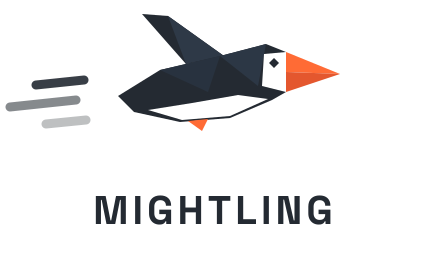
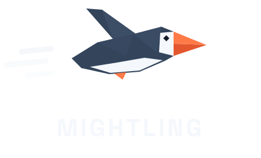

Private AI on your DGX Spark.
One command.
A fully local alternative to cloud coding agents. A coding agent, a chat assistant and a desktop app, running entirely on your own GB10. No cloud. No account. No API bill. No telemetry.
$ curl -fsSL https://github.com/dreamference/mightling/releases/latest/download/install.sh | bash$ ling-admin server start # downloads the model once (~20 GB), then serves it $ cd ~/your-project && ling # that's it
Works on the NVIDIA DGX Spark and every GB10 machine. The script verifies every download
against the release's checksums and prints each sudo command before running it.
Read it first if you like.
Try these first
$ ling "explain this repository to me like I'm new on the team" $ ling "the tests are failing: find out why and fix them" $ ling "add input validation to the signup form, with tests"
Or queue work for tonight with /night add <task>: Mightling works
through the queue while you sleep, each task on its own git branch, and you review the branches over coffee.
Your code never leaves your desk — and you can prove it
Cloud coding agents send your source code to someone else's servers. Mightling sends it nowhere: the model runs on your GB10, and nothing in Mightling phones home. No usage analytics, no metrics, no sign-in, no "anonymous" crash reports. That makes it usable for code you're not allowed to upload: client work, regulated data, unreleased products.
One command runs a real Mightling session under strace and lists every network
connection it made:
$ ling-admin audit egress ✔ Egress audit: pass Network destinations: 127.0.0.1:8000 29x model server 127.0.0.1:8767 1x Gmail search service DNS queries: none Networked git commands: none
Everything stayed on 127.0.0.1. Not one DNS lookup.
Need a hard guarantee?
Type /airgapped on and every command the agent runs gets an empty network namespace from
the Linux kernel. It isn't a polite request to the model: there is simply no network to reach.
Full Access, which would bypass the sandbox, is refused at the same time.
What can leave, and when
Only what you or the agent asks for: a web search (through a private SearXNG on your own machine),
a page fetch, a read-only request to a Google account you connected, or an update check.
At /airgapped on, none of it.
Why Mightling
🔒 Confidential
The model, your code, your prompts and your answers stay on the machine they're on.
- No account, no telemetry
- Egress audit you can rerun
/airgapped on, enforced by the kernel
⚡ Fast, with no bill
| Code | 50 tok/s |
| JSON | 87 tok/s |
| Prose | 25 tok/s |
| Reading code | ~1,700 tok/s |
| Context | 262K |
Single stream on a GB10. Run four agents at once: no quota, no "please wait".
✨ Nothing to configure
- No tuning: model, context, kernels and speculative decoding are chosen for the GB10.
- It won't freeze your machine: the host is checked and memory pressure watched during the load.
- Your other machines find it on the local network.
- Updates are one command:
ling update.
What you get
🖥️ ling, the terminal agent
Reads your repository, runs commands and tests, edits code, and asks before anything risky.
🌙 Night Shift
/night add <task> before bed; each task done on its own git branch by morning. Nothing is merged or pushed without you.
🔎 Web search and fetch
Through a private SearXNG on your own machine: no search account, no API key.
🧭 A code index
Definitions, callers and impact across your repository, so the agent finds code instead of grepping for it.
🧩 Your existing skills
Skills you already wrote for Claude Code, Gemini CLI, OpenClaw or Hermes work unchanged.
💬 Web chat
A browser assistant with web search, voice input and image understanding, on the same local model.
🪟 Desktop app preview
The chat in a window of its own, plus a Work window for agent sessions with approvals, diffs and undo.
📬 Gmail, Drive, Calendar preview
Read-only, through a sign-in that stays on your machine. Switched off entirely at /airgapped on.
Mightling and cloud coding agents
| Cloud coding agents | Mightling | |
|---|---|---|
| Where your code goes | Their servers | Nowhere |
| Account needed | Yes | No |
| Cost per token | Metered | Zero |
| Rate limits | Yes | No |
| Works with the network unplugged | No | Yes |
| You can verify what leaves | No | ling-admin audit egress |
Runs on every GB10
- NVIDIA DGX Spark
- Acer Veriton GN100
- ASUS Ascent GX10
- Dell Pro Max with GB10
- Gigabyte AI TOP ATOM
- HP ZGX Nano
- Lenovo ThinkStation PGX
- MSI EdgeXpert
They share the chip, the 128 GB of unified memory and DGX OS 7, so one installer covers them all. Mightling is developed and tested daily on the ASUS Ascent GX10; the others are covered by tests.
FAQ
Do I need a GB10?
Yes, to run the model. Another arm64 Linux machine on your network can use it as a client: the same install command sets that up automatically. Clients for x86 Linux, macOS and Windows on Arm (the RTX Spark laptops) are on the way.
I installed Puffin. Is this it?
Yes: Puffin was renamed Mightling in 1.5. Run puffin update once, then puffin one
last time. It moves your sessions, settings and links over, and from then on the command is ling.
Is it really free?
Yes. Mightling is open source under the AGPL, and the model's weights are free. Your only running cost is the electricity.
What do I need besides the machine?
The OS it ships with (DGX OS 7, or Ubuntu 24.04 where the vendor offers it), Docker with the NVIDIA Container
Toolkit, Python 3 and Git. On plain Ubuntu, ling-admin host check tells you what's missing.
Does anything ever reach the internet?
Only what you or the agent asks for, such as a web search through SearXNG on your own machine, and the
first-time downloads. /airgapped on turns all of it off.
Which model does it run?
Qwen3.8-27B in NVIDIA's 4-bit NVFP4 format, served by SGLang with a DFlash2 drafter, chosen and tuned for the GB10. About 20 GB of weights; roughly 38 GB of the machine's memory stays free while it serves.
Keep your code on your desk
If you believe code should stay on the desk it was written on, star the repository: it's how other GB10 owners find Mightling.